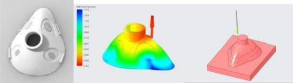
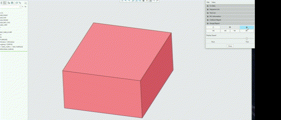

PROJECT MODULE 07
CPAP Mask in Creo
CPAP mask design with mould tooling, manufacturing simulation and engineering drawings.
Overall subject mark · 84 (HD)
Project overview
Used Creo to develop a CPAP mask part and associated tooling and manufacturing work.
My contribution
- Designed the part, sprues and core mould.
- Created renderings and engineering drawings.
- Ran an NC machine milling simulation and analysed simulation results.
Outcome
Overall subject mark: 84 (High Distinction).

